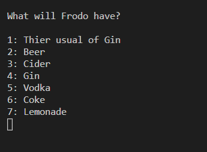

About
I am a recent graduate of an intensive training course in data engineering provided by Generation UK and am now looking for my
first role in Tech. Data analysis plays an increasingly important role in the business decision-making process, and I find the
job of extracting valuable insights really interesting and rewarding.
Skills
- Python - including a wide range of libraries such as Numpy, Pandas & matplotlib
- SQL - Primarily MYSQL but also Postgres
- AWS - Lambdas, EC2, SQS, Quicksight, Redshift & SNS
- Agile
- Version control - All projects are stored on GitHub
Projects

ETL pipeline with AWS

As part of the Generation data engineering program, our final project was to build a data pipeline to extract transaction data
from simulated cafes and transform and load the raw data into 2 seperate tables for business analysis. We used S3, Lambda, SQS,
Redshift and Quicksight.
Brew app with MYSQL database

As part of the Generation data engineering program, our first program assigned people and drinks using classes. Through a command line
interface, the user could add/remove people and drinks and have people order a round of drinks that was saved to a MYSQL database. This
data is then used to produce a variety of graphs using matplotlib.
LinkedIn web scraping tool

After finishing the generation course, I wanted to see the most common skills mentioned in job applications. This web scraping program
samples the 25 most relevant junior data engineering roles listed on LinkedIn and tallies the skills in a csv file. This all runs on AWS lambda
with a seperate one plotting the data with matplotlib. S3 is used to store the csv file, graph image and the list of words that are tracked.
The latest graph is uploaded to this website everyday with a shell script that runs locally on my computer.